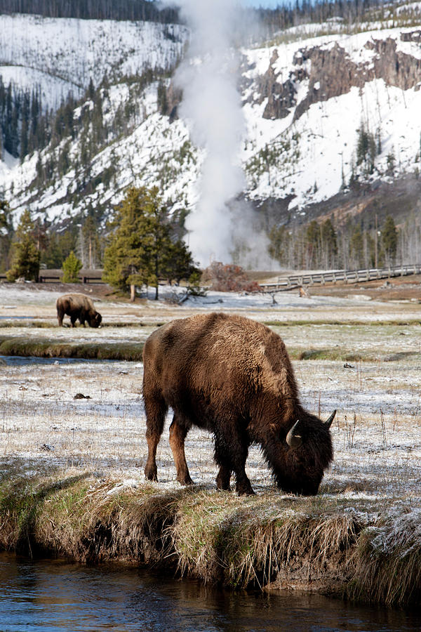
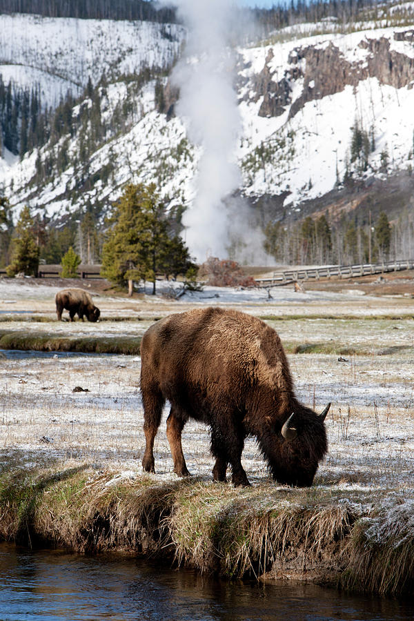
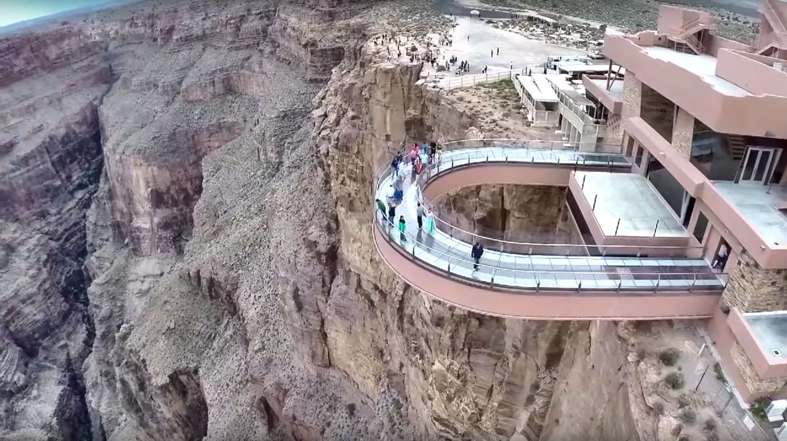
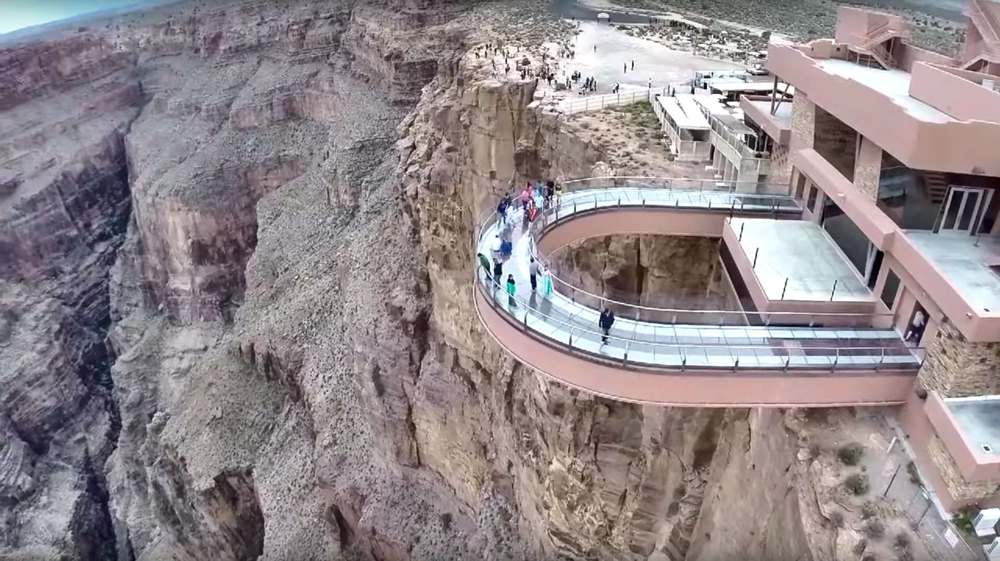

Travel
Yellowstone National Park
Mammoth Hot Springs has a number of actively forming Travertine terraces.
The drive to Lamar Valley requires some dangerous roads. But the result is amazing sunset views.
The multicolored layers get their hues from different species of bacteria living in the cooler water around the spring.
The buffalo were so common along the roads in Yellowstone that our mantra became "If it ain't lickin the car, we aren't stopping."
If you can handle the odor, the Yellowstone Sulphur Springs is a great place to hike.
Photo Gallery
 


Grand Canyon National Park
The Grand Canyon is a breathtaking natural wonder located in Arizona, USA, carved by the Colorado River over millions of years. Stretching over 277 miles long, up to 18 miles wide, and over a mile deep, this iconic landmark showcases intricate layers of rock that tell a complex geological history. Its monumental scale and intricate and colorful landscape offer some of the most overwhelming vistas in the world.
Visitors from around the globe flock to the Grand Canyon National Park to witness its grandeur. Whether they experience it by hiking its numerous trails, rafting in the Colorado River, or simply observing from one of the many overlooks, the Grand Canyon offers an unparalleled experience of awe and wonder. Its overwhelming size and intricate and colorful landscape offer a unique spectacle unsurpassed in its ability to illustrate the sheer power of natural forces.
The Grand Canyon Skywalk is a bridge with a glass walkway on the edge of a canyon.
You can go horseback riding in through the canyon as well!
Photo Gallery
 

Shanghai
Shanghai, often referred to as the "Pearl of the Orient," is a dynamic and vibrant metropolis in China. As one of the world's largest cities, Shanghai is a dazzling blend of tradition and modernity.
Shanghai is not just a city of skyscrapers; it's a city of contrasts. The serene Yu Garden and its classical Chinese architecture offer a peaceful escape from the bustling streets, while the ultra-modern shopping districts like Nanjing Road cater to the desires of avid shoppers.
There are 52 classical revival buildings with different styles standing on the Bund, known as the Bund World Architecture Exhibition Group. It is an important historical site and representative building in modern China, and one of the landmarks of Shanghai.